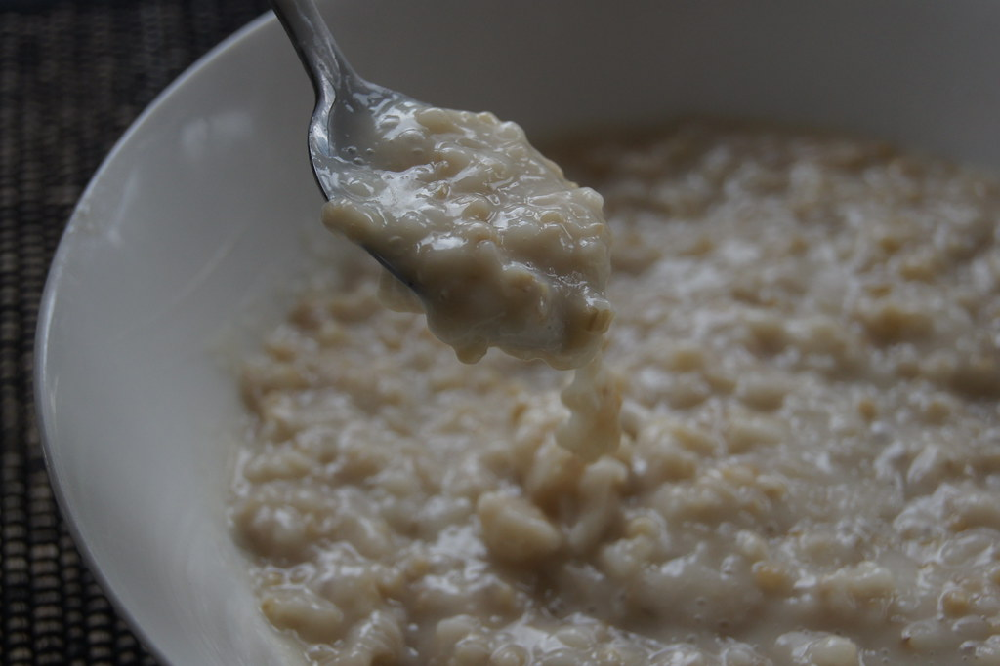

Oatmeal

Oatmeal.
Ingredients
- Rolled oats, sometimes called traditional oats.
- Water.
- Salt (optional, consult your doctor.)
- Milk (optional.)
Steps
- Fill microwaveable bowl with 1 part water and 1 part oatmeal. Add dash of salt if you want.
- Put in microwave, and microwave on high for 1 minute.
- Carefully remove from microwave, and stir.
- Repeat steps 2 & 3 until oats have absorbed water and a desired porridge texture has been reached.
- Add milk to taste.